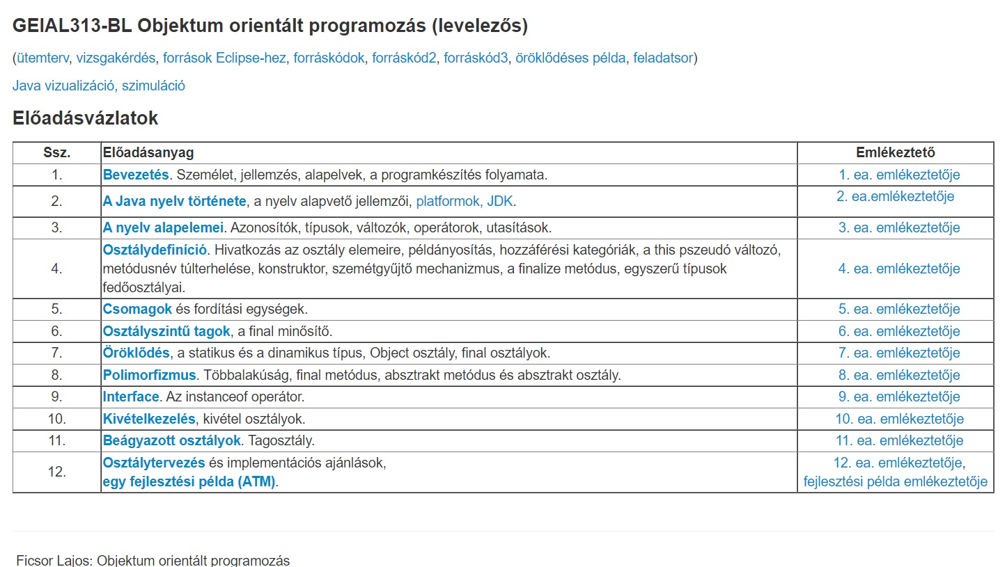

Az objektum-orientált programozás alapelvei. A Java/C# programozási nyelv története alapvető sajátosságai, a Java/.NET platform. A nyelv alapelemei. Operátorok, tömbök, típusok. Vezérlési szerkezetek. Osztály és objektum, példányosítás. Hozzáférési kategóriák. Konstruktorok, inicializáló blokkok, destruktor jellegű metódusok. Öröklődés, polimorfizmus. Alapvető osztályok. Kivételkezelés. Interface. Alapvető csomagok és névterek. Osztálytervezési szempontok, alkalmazási példák.
